bio
Mary Norell Jackson
Before she entered Kindergarten, Norell knew exactly what she wanted to be when she grew up. She was born to be a singer.
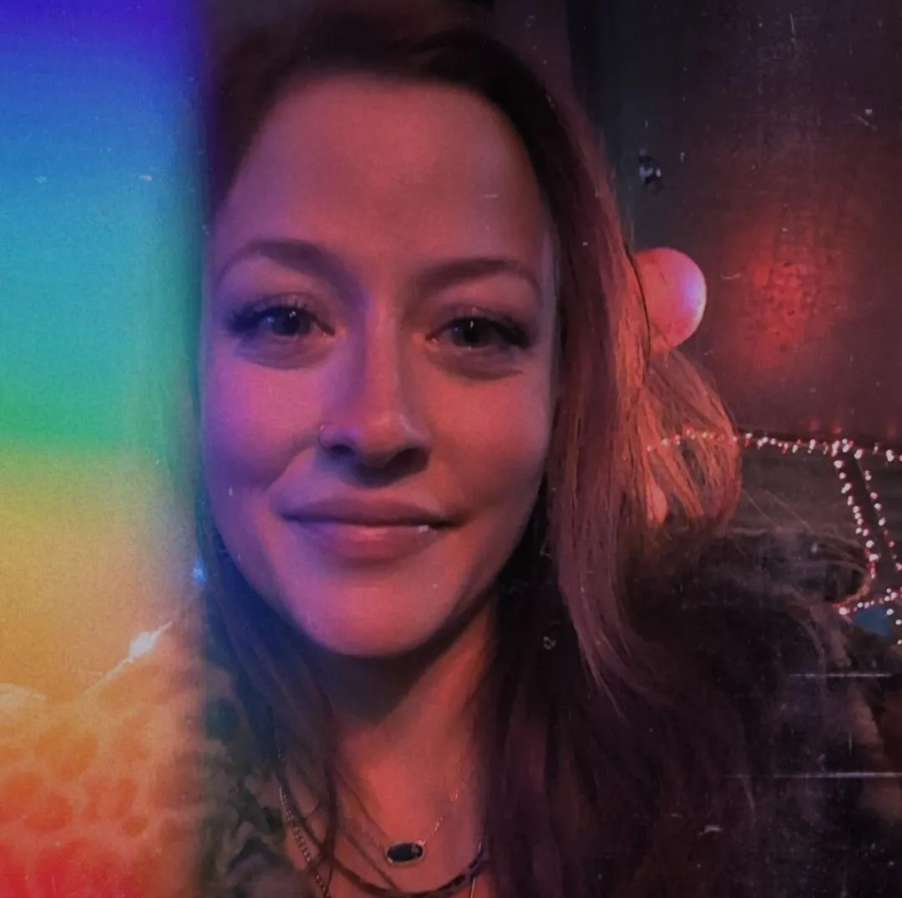
Norell, born Mary Norell Jackson on the 25th of September, is a humble singer-songwriter who overcame adversity and earned support of some of her heroes.
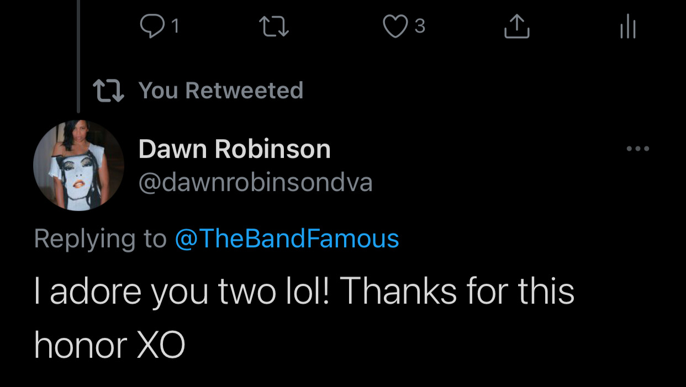
Check out this recent interview with Norell by European Indie Music Network:
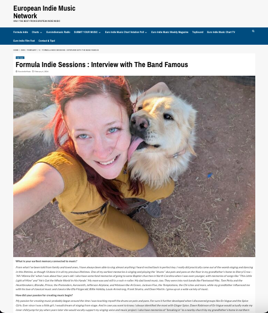
She writes all of her own music, and has already had singles that graced the radio in mutliple countries worldwide with previous music works out there under The Band Famous.
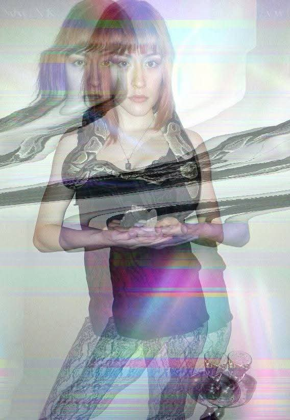
Norell is working on a couple of very special collaborative projects right now!

Her single "Champion Mindset" was featured in over seven countries worldwide including USA, Canada, Mexico, Italy, Portugal, Spain, and more!
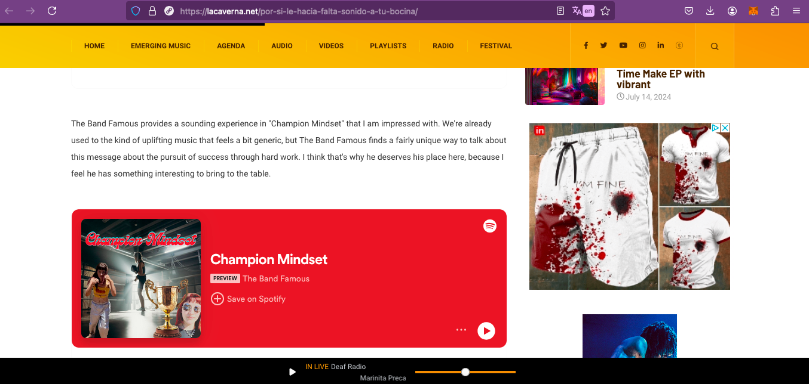
Her single "Mermaid Energy" was featured and reviewed and on the radio in Brazil!
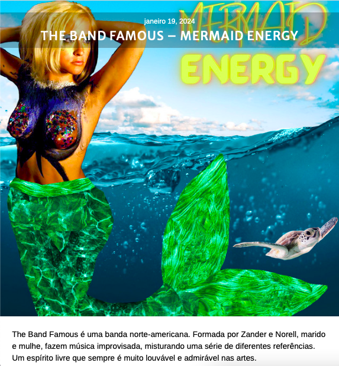
Her original song "Escape" from the debut album Last Words released under The Band Famous was used in international artist Olek's Virtual Reality exhibition in NYC!

Norell transcends her pain into power, viewing song-writing as a personal form of alchemy. "This isn't new to me. This is practiced alchemy."
Norell came out the womb singing, and was active in choir her entire life, even participating in advanced choirs like "Circle the State" when living in Indiana one year. She took her love for music farther than singing.
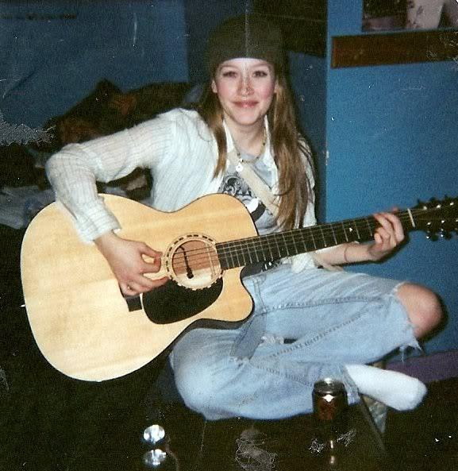
From the time she was a girl she would play the piano Sozuki-style, and by the 7th grade she was hired to play the flute professionally in the all-ages City band of Ashland, WI. She studied violin, flute, piano, and guitar, but her voice has always been her number one instrument.
She performed regular open mic events and has always loved karaoke, as such, one of her many nicknames from friends is "Maryoke".
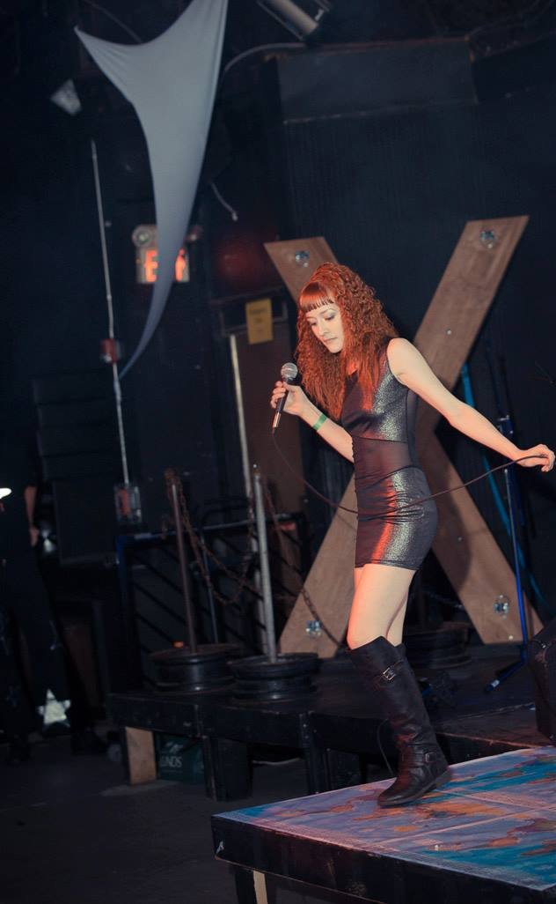
She first debuted her very first original song, “Adaptation” a cappella, just her raw voice to an audience in Minneapolis, MN in 2012.
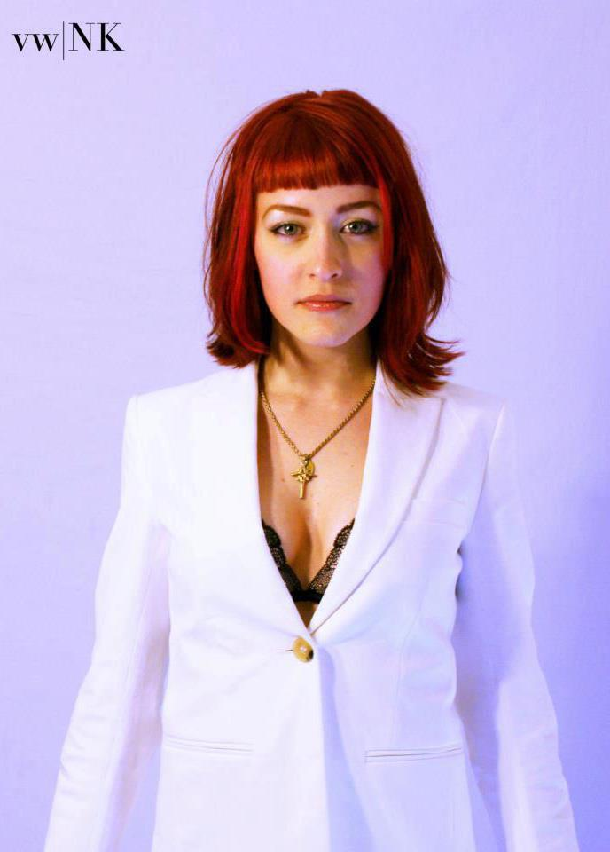
2026 Maxim Natural Beauty champion. Mary Norell Jackson received a swimsuit as a Maxim Salty Mermaid Finalist, and after making it to the Interview round past all public voting rounds, the judges selected Norell as the 2026 Maxim Natural Beauty champion!
The Band Famous®, also known as Band Famous, The Band Famous™, and TBF for short, featured Norell as singer, lyricist, and co producer.
Suzann Beck, an artist who hired Norell as a portrait model featured an oil portrait she painted of the soulful singer, with the painting on display at Suzann Beck's art show at the Metro Gallery next to the Walker Art Center circa Fall of 2015.
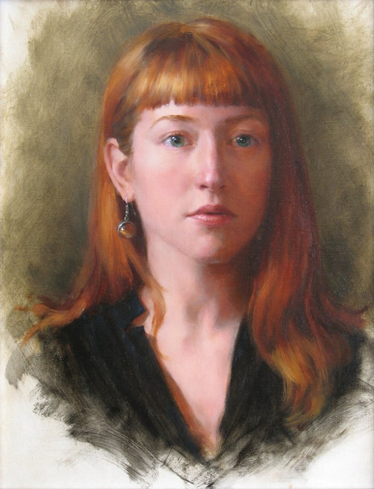
While in NYC, TBF garnered support from Twin Cities very own Atmosphere, who even personally tweeted out the band's Kickstarter project to make their native iPhone App "The Band Famous" available cross-platform to the Android Google Play Store.
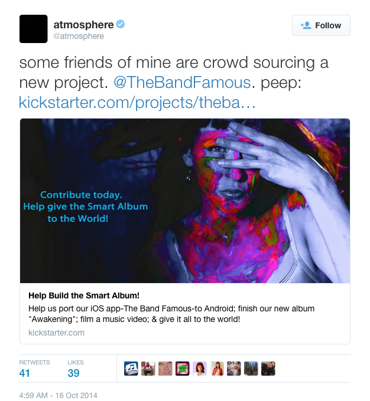
Author Jay Gabler at Minnesota Public Radio and 89.3FM The Current also did an exceptional feature on the band:
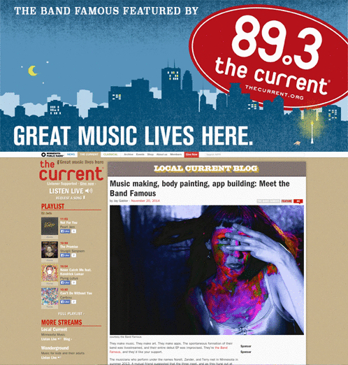
WeekOnLaRadio, a radio station broadcast to New York, Mexico, Argentina, and the Dominican Republic featured the band, with hosts Jack Ramos, and Bianka Gomez interviewing TBF live on the show in November 2014.
Norell modeled for celebrity hair stylist Ted Gibson in NYC circa January 2015.
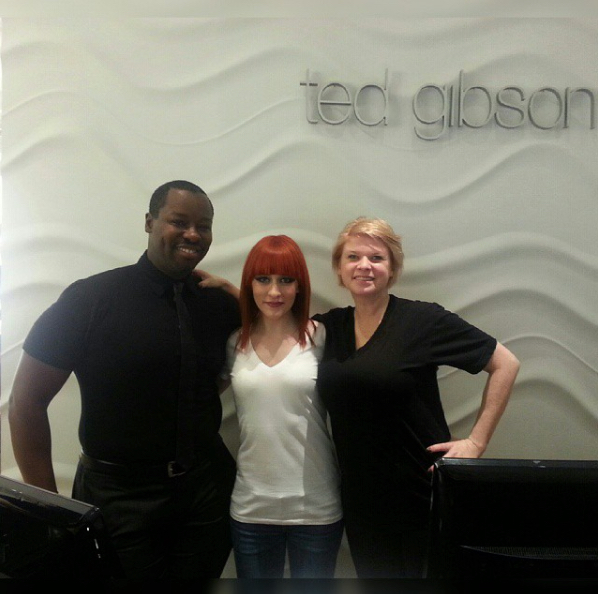
Norell auditioned for NBC's The Voice at the Javitz Center in Manhattan that same month, and almost went on the show, but instead, after connecting with actor and comedian Tom Green, who invited the band to perform on his Webovision show in Los Angeles, took the west coast by storm.
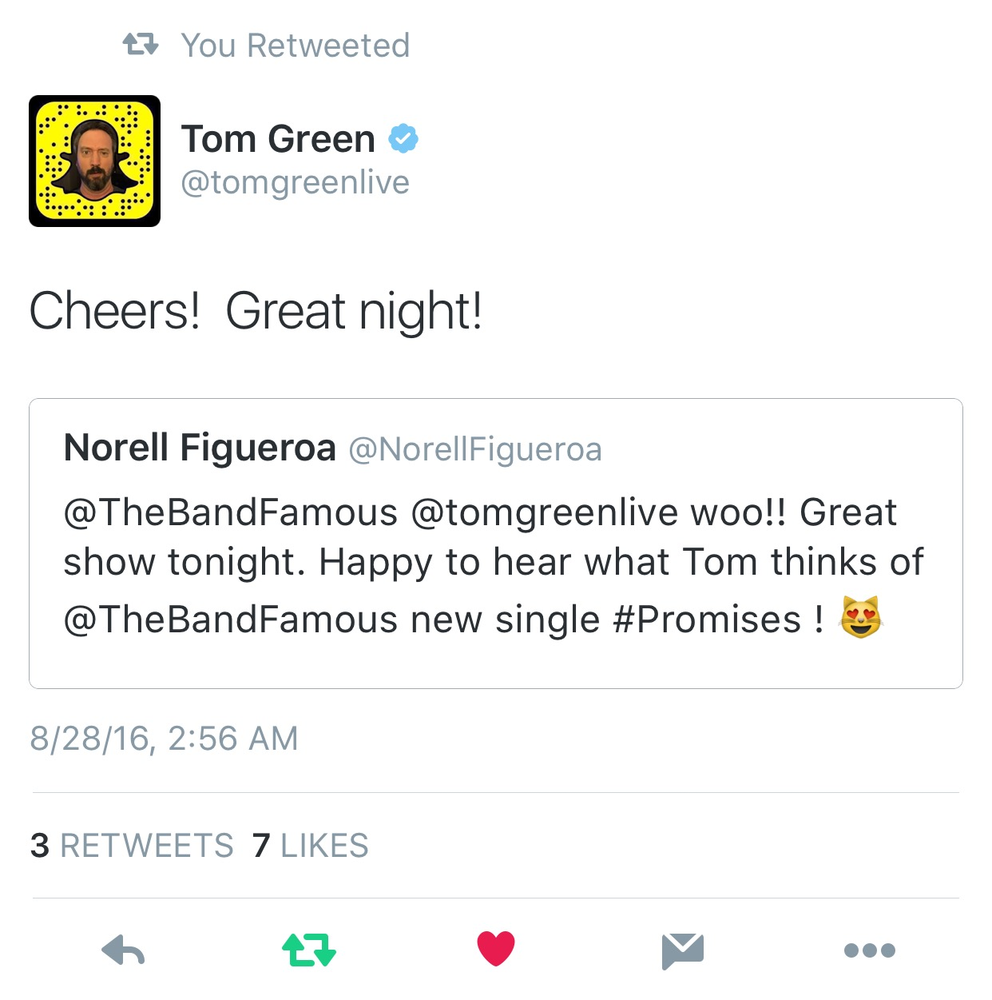
Five-Time-Grammy-Winning Artist BJ Thomas downloaded "The Band Famous" and left a review on the iPhone App Store under alias "Raindrops Mann", calling The Band Famous® his new favorite music.
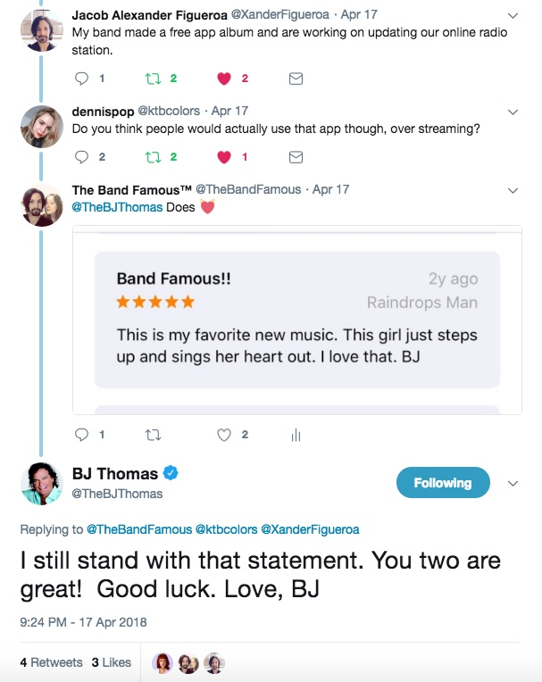